Handleiding
Sponsorloop Tracker
Rondjes tellen, de stand live op het grote scherm en een feestelijke uitslag.
👆 Tellen met één tik📺 Live stand🏆 Onthulling📶 Werkt offline
Open de tracker
https://h4sw5q2wr9-byte.github.io/SponsorLoop/
Gemaakt door Tijn van Kemenade · november 2026
Over de app
Wat is de Sponsorloop Tracker?
Een website waarmee je tijdens de sponsorloop per klas de gelopen rondjes telt. Je tikt op een grote knop en de teller gaat omhoog. De stand is live te volgen op een tweede scherm en aan het einde onthul je de winnaars.
Waarvoor?
Het tellen van rondes per klas tijdens de jaarlijkse sponsorloop, met een schooldoel, statistieken en een uitslag voor iedereen.
Voor wie?
Leerkrachten en leerlingen die tellen, de organisatie van de sponsorloop, en iedereen die meekijkt in de gymzaal of via een livestream.
Waarom?
Turven op papier is foutgevoelig en saai. Met de tracker is tellen snel, zie je direct wie er voor staat en wordt de uitslag een feestje.
Wat heb je nodig?
Alleen een browser: digibord, laptop, tablet of telefoon. Geen account nodig. Na het eerste bezoek werkt de tracker ook zonder internet (behalve Live Sync).
Belangrijk: de rondes worden alleen op het apparaat zelf bewaard. Exporteer na afloop altijd een backup (Beheer → pijltjes-knop → Exporteren).
Snel aan de slag
- Open de site op het apparaat waarop geteld wordt (bijv. het digibord in de gymzaal).
- Klassen klaarzetten: ga naar Beheer en voeg de klassen toe, of importeer het bestand van vorig jaar.
- Stel een schooldoel in (optioneel), bijvoorbeeld 1000 rondes.
- Tellen: kies in de Tracker een klas en tik op de grote knop bij elk rondje.
- Live tonen (optioneel): start Live Sync en open de stream-pagina op een ander scherm.
- Na afloop: onthul de uitslag en exporteer de gegevens als backup.
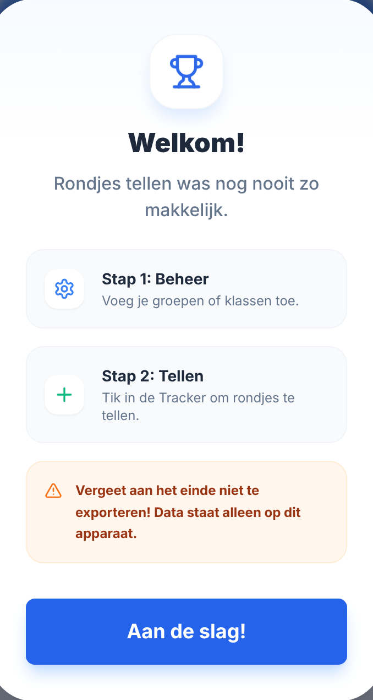
Het welkomstscherm bij het eerste bezoek
Tellen
De Tracker
Het hoofdscherm. Kies bovenaan een klas en tik op de grote gekleurde knop: elke tik is één rondje.
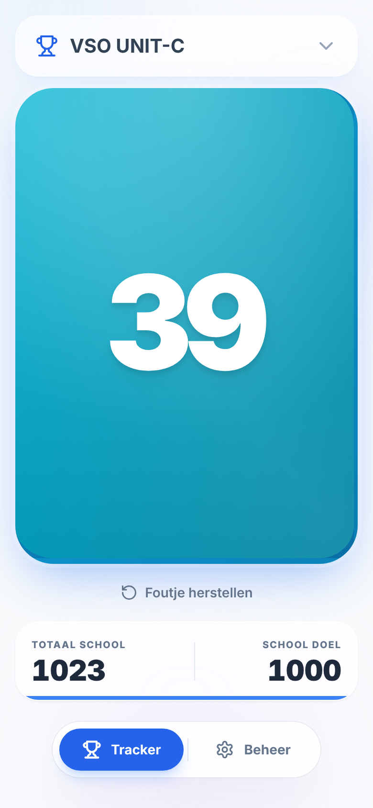
Op een telefoon
Zo werkt het
- Klas kiezen: via de lijst bovenaan. De knop krijgt de kleur van de klas.
- Rondje tellen: tik op de grote knop. Het getal springt omhoog.
- Foutje? Met Foutje herstellen gaat er één rondje af.
- Onderaan zie je het totaal van de hele school en het schooldoel, met een voortgangsbalk.
- Alles wordt direct bewaard op het apparaat, ook als je de pagina sluit.
Tip: op een telefoon trilt het toestel kort bij elke tik, zodat je voelt dat het rondje is geteld.
Op het digibord
Op een groot scherm staat links een ranglijst. Tik op een klas in die lijst om hem meteen te kiezen: handig als alle klassen op het digibord tellen.
Instellen
Beheer
Hier zet je alles klaar: klassen, het schooldoel en de statistieken.
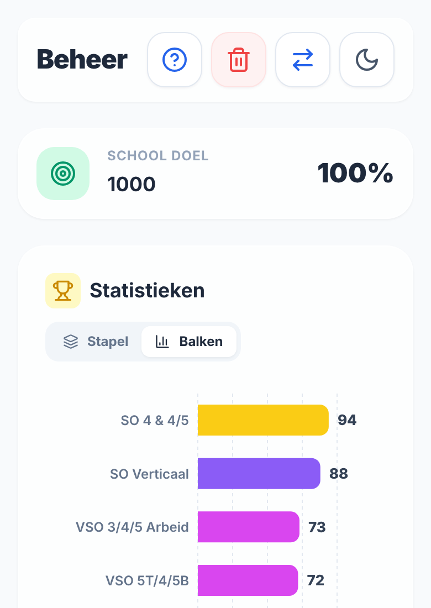
Schooldoel en statistieken
Klassen
- Toevoegen: typ een naam en tik op +.
- Bewerken (potloodje): naam, rondes (met − en +) en kleur.
- Verwijderen (prullenbak): één klas weg.
- Zoeken: handig bij veel klassen.
Schooldoel en statistieken
- School doel: het aantal rondes dat de school samen wil halen.
- Statistieken: Balken per klas of Stapel voor het geheel.
Knoppen bovenaan
| ? | Hulp en feedback | ⇄ | Data & Beheer |
| 🗑 | Alles wissen | 🌙 | Licht of donker |
Let op: de rode prullenbak bovenaan wist alle klassen en rondes. Maak eerst een export.
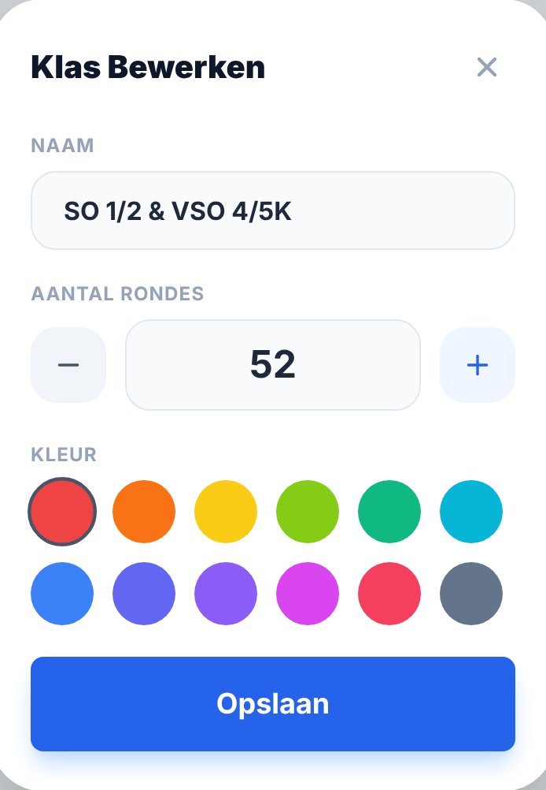
Een klas bewerken (potloodje)
Een klas bewerken
Pas de naam, het aantal rondes en de kleur aan. De knop in de Tracker krijgt die kleur.
Tip: te vaak getikt of een rondje gemist? Pas het aantal aan met − en +.
Gegevens
Data bewaren
De tracker slaat alles op in de browser van het apparaat waarop je telt. Er is geen account en de gegevens staan niet op internet (behalve tijdens Live Sync, zie volgende pagina).
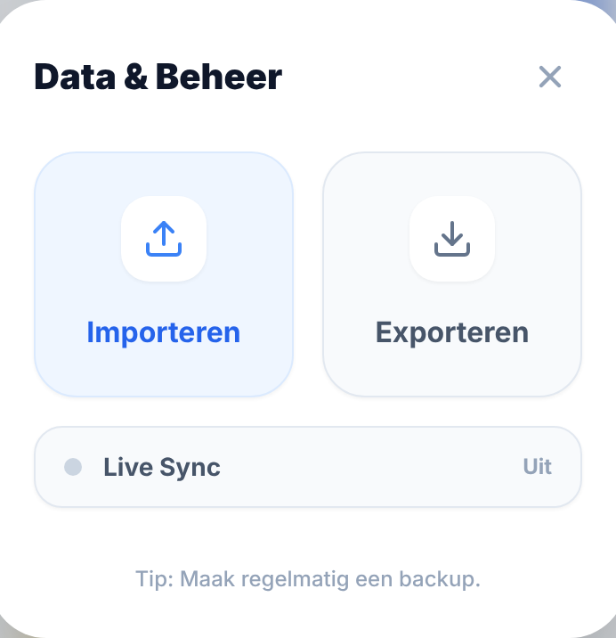
Data & Beheer (pijltjes-knop in Beheer)
Exporteren (backup maken)
Downloadt een bestand, bijvoorbeeld sponsorloop-backup-2026-05-14-15-30-00.json, met alle klassen, rondes en het schooldoel.
Importeren
Laadt een eerder geëxporteerd bestand. Handig om de klassen van vorig jaar te hergebruiken of om verder te tellen op een ander apparaat.
Belangrijk: importeren vervangt de huidige klassen. Wist iemand de browsergeschiedenis, dan zijn de gegevens weg. Exporteer daarom na afloop altijd. De app herinnert je hier bij het openen aan.
Klassenlijst van de school: bewaar één export met alle klassen en 0 rondes. Elk jaar importeer je die en kun je meteen beginnen.
Welk apparaat?
📱 Eén vast apparaat
Tel op één apparaat, bijvoorbeeld het digibord. Iedereen kan daarop tikken.
💾 Eigen opslag
Elk apparaat bewaart zijn eigen rondes. De telefoon ziet niet wat het digibord telde.
🔁 Wisselen?
Exporteer op het oude apparaat en importeer op het nieuwe. Alles komt mee.
Tweede scherm
Live Sync en de stream-pagina
Met Live Sync zie je de stand live op een ander scherm: een tv, beamer of livestream. Het tel-apparaat stuurt de stand door en het andere scherm laat hem zien.
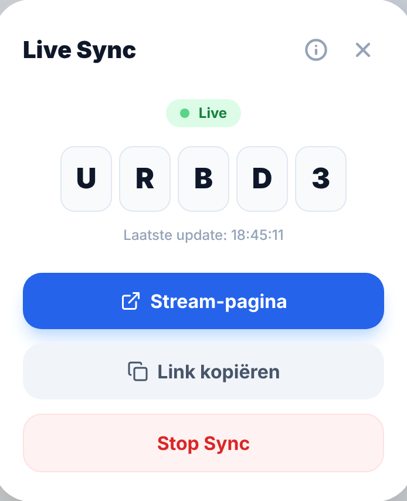
Live Sync met de code
- In de tracker: Beheer → pijltjes-knop → Live Sync → Start Sync. Je krijgt een code van 5 tekens.
- Open op het andere scherm de stream-pagina:
h4sw5q2wr9-byte.github.io/SponsorLoop/stream.html
- Vul de code in. Je ziet een overzicht van wat er binnenkomt.
- Kies Live stand (tijdens het lopen) of Onthulling (de uitslag).
Scan om de stream-pagina te openen.
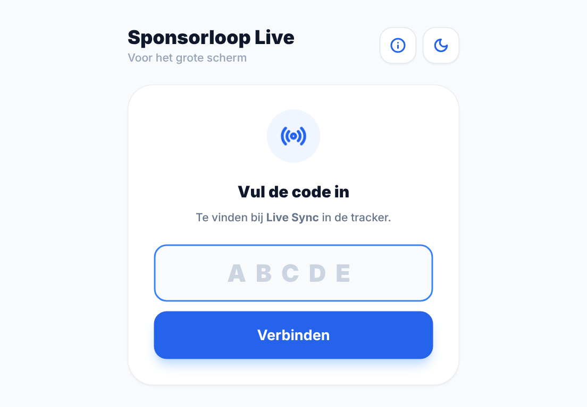
Code invullen
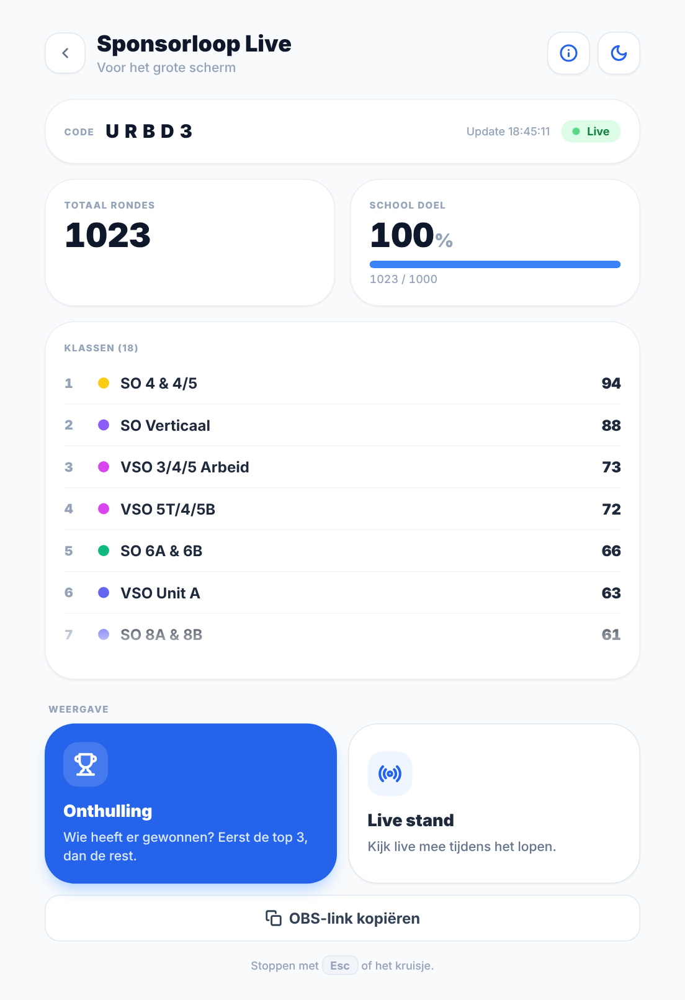
Overzicht met de keuze voor Live stand of Onthulling
Goed om te weten: het andere scherm is binnen ongeveer 2 seconden bijgewerkt. Live Sync staat bij het openen altijd uit. Na herladen kies je Verder met <code>, dan blijft de stream-pagina gewoon werken. Stop Sync wist de gedeelde gegevens. Vergeten te stoppen? Dan ruimt de tracker de oude code zelf op (bij een nieuwe code, of na een dag).
Op het grote scherm
Live stand en Onthulling
Live stand: tijdens het lopen
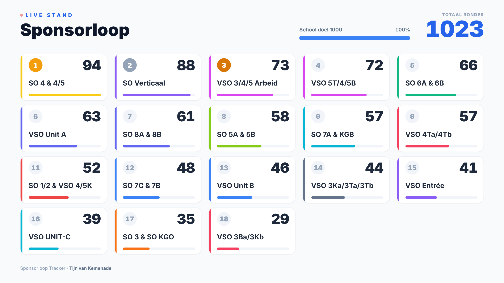
Alle klassen met hun rondes, het totaal en het schooldoel. Werkt vanzelf bij: getallen springen op en klassen schuiven naar hun nieuwe plek als ze iemand inhalen.
Onthulling: de uitslag
Start met Spatie of een klik op het intro-scherm. Daarna loopt alles automatisch, in ongeveer een minuut:
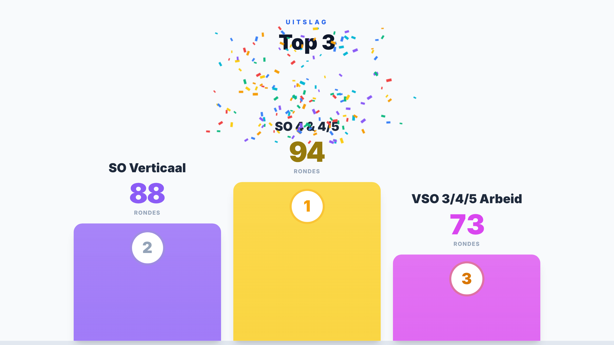
2. Top 3 op het podium, met confetti
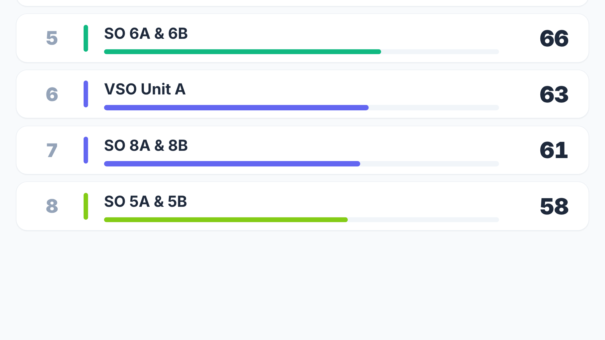
3. De rest rolt één voor één in beeld
4. Eindstand met alle klassen
| Toets | Wat doet het |
|---|
| Spatie / klik | Onthulling starten (op het intro-scherm). Daarna: stap overslaan. |
| Esc of het kruisje | Stoppen. Het kruisje verschijnt als je de muis beweegt of het scherm aanraakt. |
Praktisch
Checklist en problemen oplossen
Vooraf
- Klassen importeren of toevoegen
- Schooldoel instellen
- Tracker openen op het digibord
- Test: één rondje tellen en weer herstellen
Tijdens
- Live Sync starten
- Stream-pagina openen → Live stand
- Af en toe exporteren als tussenbackup
Na afloop
- Stream-pagina → Onthulling
- Exporteren en het bestand bewaren
- Live Sync stoppen
| Probleem | Oplossing |
|---|
| Leeg of vreemd scherm | Pagina vernieuwen. Op een tv: tabblad sluiten en opnieuw openen. |
| Melding Oudere browser | De site werkt, maar soms minder mooi. Gebruik bij voorkeur Chrome of Edge. |
| Live Sync: Niet beschikbaar | Tellen gaat gewoon door. Blijft het zo? Meld het via Probleem melden. |
| Live Sync: Geen verbinding | Internet controleren. De app probeert het vanzelf opnieuw. |
| Stream: Tracker niet actief | Live Sync staat uit. Start of hervat het in de tracker. |
| Wifi valt weg | Gewoon doortellen: de tracker werkt offline. Live Sync gaat vanzelf verder als het internet terug is. |
| Klassen weg | Importeer de laatste export. |
| Te vaak getikt | Foutje herstellen, of de klas bewerken. |
| Melding Oeps, er ging iets mis | Op Opnieuw proberen drukken. De rondes blijven bewaard. |
Idee of probleem?
Via Beheer → ? → Idee of probleem melden (of op de stream-pagina via de i) stuur je een bericht naar de beheerder. Bij een probleem gaat technische info automatisch mee. Zet er geen persoonlijke gegevens in: het bericht komt openbaar op GitHub.
Als app installeren
Chrome of Edge: menu → App installeren / Toevoegen aan startscherm. Opent als losse app met eigen icoon.
OBS / livestream
OBS-link kopiëren op de stream-pagina geeft de live stand met doorzichtige achtergrond (Browser-bron). Met de code kun je alleen meekijken.
Op een website
Scorebord embedden
Zet de live stand op een andere website, bijvoorbeeld die van het Glazen Huis. Bezoekers volgen dan live hoeveel rondjes elke klas loopt.
Zo zet je het op een website
- Start Live Sync in de tracker.
- Open de stream-pagina en vul de code in.
- Klik op 🔗 Embed en daarna op Code kopiëren.
- Plak de code op de website, bijvoorbeeld als HTML-blok of Embed-blok.
Let op: als je een nieuwe Live Sync-code start, moet je de embed opnieuw kopiëren en bijwerken op de website.
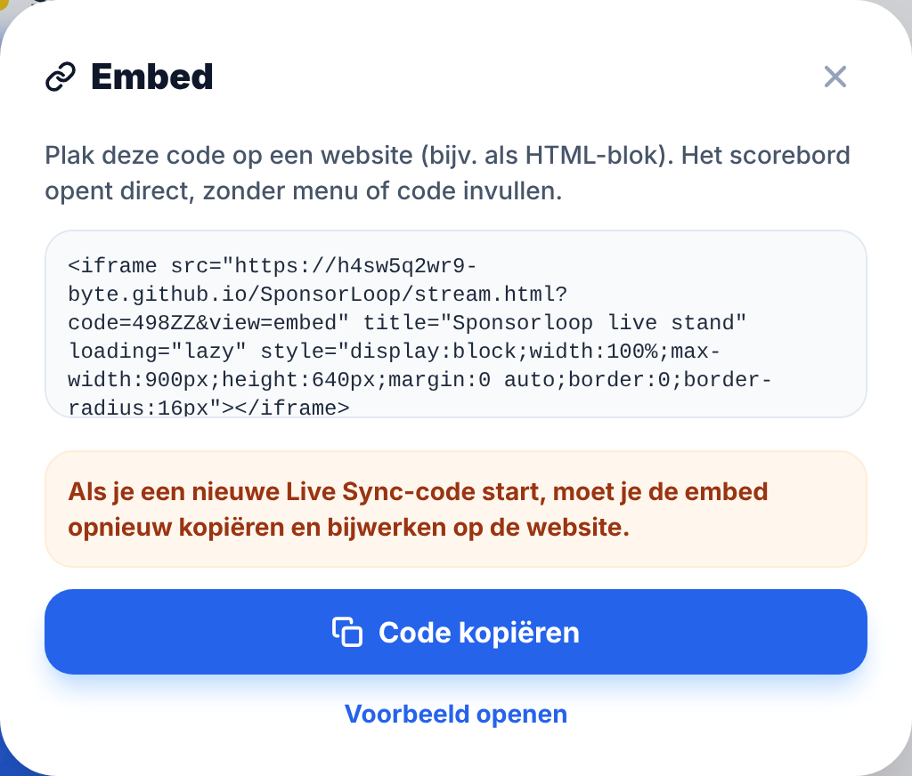
Het Embed-venster op de stream-pagina
Zo ziet het eruit
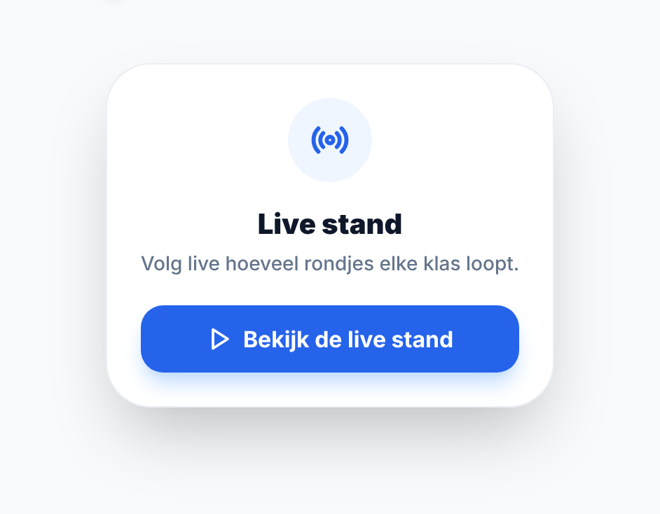
Eerst een startscherm, pas na een klik live
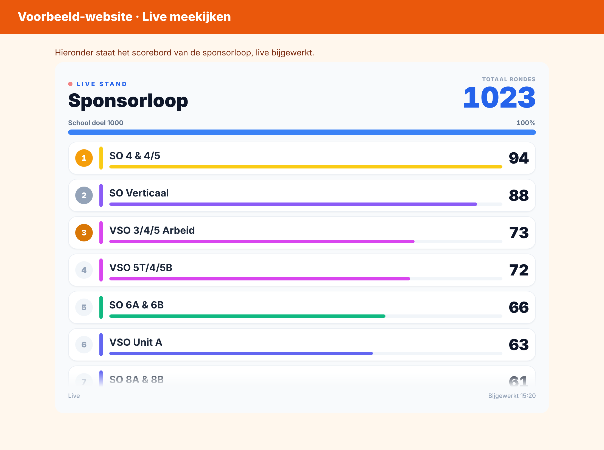
Het scorebord op een website, live bijgewerkt
👆 Eerst klikken
Pas na Bekijk de live stand wordt verbonden. Langs scrollen kost niets.
🕙 Na 10 minuten pauze
Daarna Opnieuw verbinden, zodat er plek blijft voor anderen.
💬 Duidelijke meldingen
Live Sync uit, niet geteld, geen internet of te druk: het scorebord zegt het.
Gratis Firebase-plan: ongeveer 100 kijkers tegelijk; meer kan met het Blaze-plan (zelfde code). Opties: &theme=dark (donker) of &bg=transparent (doorzichtig).